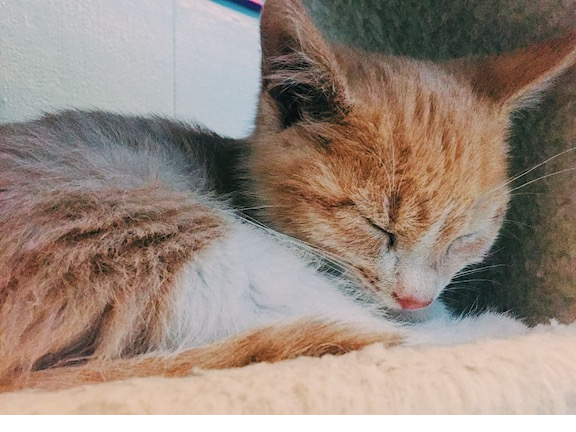

The Alley Cat Cafe's Mission Statement
The Alley Cat Cafe is not just a cafe for people to play with cats, we want it to be a symbol for care and hope for cats without owners. We not only want to take care of and help cats in the Alley Cat Cafe to find a home, but also dedicate our time to secure a home and food for abandonded cats in the Ithaca Community. Although our goal might not seem grandious as of now, what we strive to do is start with the small steps necessary to have our message and mission to spread out to those with the hearts to recieve it.
Our cats are come from the organization Brown Coat Cat Rescue located here in Ithaca.
